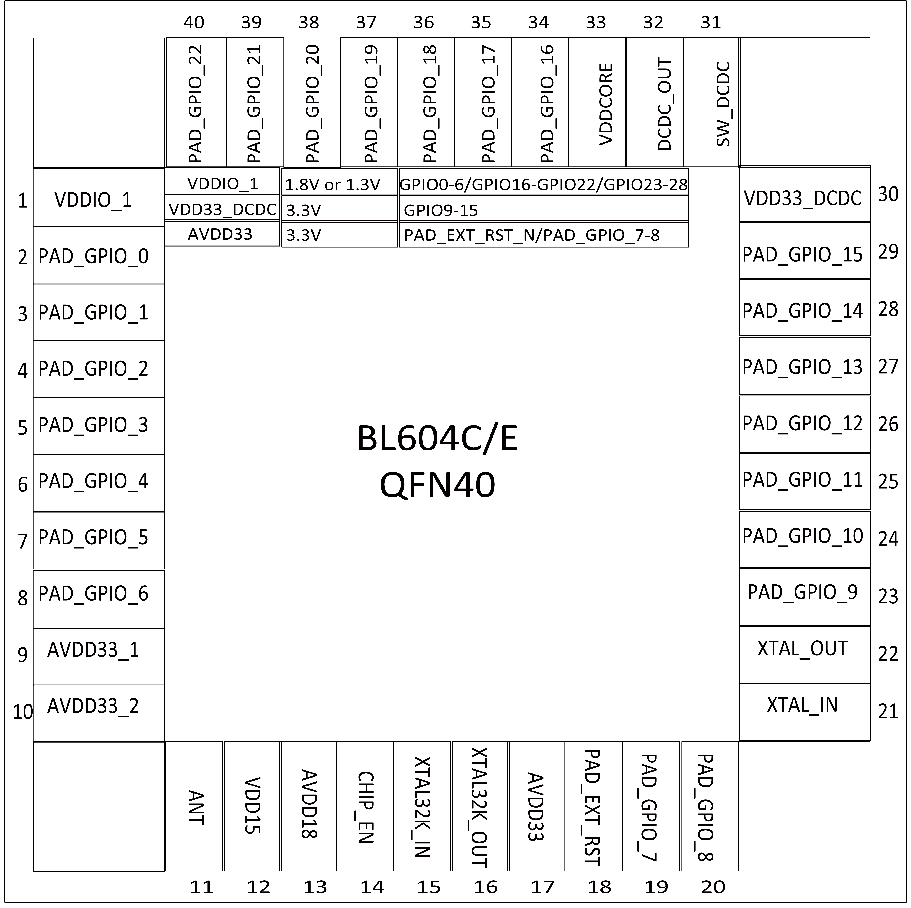

4. Pin Definition (QFN40)¶
BL604 40-pin package includes 10 power pins, 6 analog pins, 1 reset pin, and 23 flexible GPIO pins.

BL604L pin layout

BL604C/E pin layout
| No. | Name | Type | Description |
| 1 | DVDDIO_1 | Power | Externally powered 3.3V or 1.8V |
| 2 | PAD_GPIO_0 | Digital | SDIO_CLK, SF_D1, SPI_MOSI/SPI_MISO, I2C_SCL, UART, PWM, GPIO |
| 3 | PAD_GPIO_1 | Digital | SDIO_CMD, SF_D2, SPI_MOSI/SPI_MISO, I2C_SDA, UART, PWM, GPIO |
| 4 | PAD_GPIO_2 | Digital | SDIO_DAT0, SF_D3, SPI_SS, I2C_SCL, UART, PWM, GPIO |
| 5 | PAD_GPIO_3 | Digital | SDIO_DAT1, SPI_SCLK, I2C_SDA, UART, PWM, GPIO |
| 6 | PAD_GPIO_4 | Digital | SDIO_DAT2, SPI_MOSI/SPI_MISO, I2C_SCL, UART, PWM, GPIO |
| 7 | PAD_GPIO_5 | Digital | SDIO_DAT3, SPI_MOSI/SPI_MISO, I2C_SDA, UART, PWM, GPIO |
| 8 | PAD_GPIO_6 | Digital | SPI_SS, I2C_SCL, UART, PWM, GPIO |
| 9 | AVDD33_1 | Power | Externally powered 3.3V |
| 10 | AVDD33_2 | Power | Externally powered 3.3V |
| 11 | ANT | Analog | RF input and output (single pin) |
| 12 | VDD15 | Power | power 1.5V |
| 13 | AVDD18 | Power | power 1.8V |
| 14 | CHIP_EN | Digital | Chip enable |
| 15 | NC | For BL604L | |
| XTAL32K_IN | Analog | Crystal oscillator 32.768kHz input (For BL604C/E) | |
| 16 | NC | For BL604L | |
| XTAL32K_OUT | Analog | Crystal oscillator 32.768kHz output (For BL604C/E) | |
| 17 | AVDD33 | Power | Externally powered 3.3V |
| 18 | PAD_EXT_RST | Digital | External reset |
| 19 | PAD_GPIO_7 | Digital | SPI_SCLK, I2C_SDA, UART, PWM, AUXADC, GPIO |
| 20 | PAD_GPIO_8 | Digital | SPI_MOSI/SPI_MISO, I2C_SCL, UART, PWM, AUXADC, GPIO |
| 21 | XTAL_IN | Analog | External crystal input, support 24/32/38.4/40MHz |
| 22 | XTAL_OUT | Analog | External crystal output, support 24/32/38.4/40MHz |
| 23 | PAD_GPIO_9 | Digital | SPI_MOSI/SPI_MISO, I2C_SDA, UART, PWM, AUXADC, GPIO |
| 24 | PAD_GPIO_10 | Digital | SPI_SS, I2C_SCL, UART, PWM, AUXADC, GPIO |
| 25 | PAD_GPIO_11 | Digital | SPI_SCLK, I2C_SDA, UART, PWM, AUXADC, GPIO |
| 26 | PAD_GPIO_12 | Digital | SPI_MOSI/SPI_MISO, I2C_SCL, UART, PWM, AUXADC, GPIO |
| 27 | PAD_GPIO_13 | Digital | SPI_MOSI/SPI_MISO, I2C_SDA, UART, PWM, AUXADC, GPIO |
| 28 | PAD_GPIO_14 | Digital | SPI_SS, I2C_SCL, UART, PWM, AUXADC, GPIO |
| 29 | PAD_GPIO_15 | Digital | SPI_SCLK, I2C_SDA, UART, PWM, AUXADC, GPIO |
| 30 | VDD33 | Power | External power supply 3.3V (For BL604L) |
| VDD33_DCDC | Power | DCDC (For BL604C/E) | |
| 31 | VDD33 | Power | External power supply 3.3V (For BL604L) |
| SW_DCDC | Power | DCDC (For BL604C/E) | |
| 32 | VDD33 | Power | External power supply 3.3V (For BL604L) |
| DCDC_OUT | Power | DCDC (For BL604C/E) | |
| 33 | VDDCORE | Power | Core Power |
| 34 | PAD_GPIO_16 | Digital | SPI_MOSI/SPI_MISO, I2C_SCL, UART, PWM, GPIO |
| 35 | PAD_GPIO_17 | Digital | SF_D3, SPI_MOSI/SPI_MISO, I2C_SDA, UART, PWM, GPIO |
| 36 | PAD_GPIO_18 | Digital | SF_D2, SPI_SS, I2C_SCL, UART, PWM, GPIO |
| 37 | PAD_GPIO_19 | Digital | SF_D1, SPI_SCLK, I2C_SDA, UART, PWM, GPIO |
| 38 | PAD_GPIO_20 | Digital | SF_D0, SPI_MOSI/SPI_MISO, I2C_SCL, UART, PWM, GPIO |
| 39 | PAD_GPIO_21 | Digital | SF_CS, SPI_MOSI/SPI_MISO, I2C_SDA, UART, PWM, GPIO |
| 40 | PAD_GPIO_22 | Digital | SF_CLK_OUT, SPI_SS, I2C_SCL, UART, PWM, GPIO |